| Symbol |
Description |
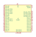
BL652 | Description: Bluetooth module
Keys: Bluetooth Nordic nRF52
Datasheet: http://cdn.lairdtech.com/home/brandworld/files/Datasheet%20-%20BL652.pdf |
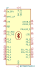
BM78SPPS5MC2 | Description: Bluetooth Dual-Mode, UART, Class 2
Keys: Bluetooth BLE BT GAP SPP SDP RFCOMM L2CAP GATT ATT SMP L2CAP
Datasheet: http://ww1.microchip.com/downloads/en/DeviceDoc/60001380C.pdf |
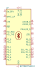
BM78SPPS5NC2 | Description: Bluetooth Dual-Mode, UART, Class 2
Keys: Bluetooth BLE BT GAP SPP SDP RFCOMM L2CAP GATT ATT SMP L2CAP
Datasheet: http://ww1.microchip.com/downloads/en/DeviceDoc/60001380C.pdf |
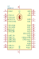
BTM112 | Description: Bluetooth SPP Module, UART, Class 2
Keys: Bluetooth BT SPP Module
Datasheet: https://www.sparkfun.com/datasheets/Wireless/Bluetooth/BTM112_wATcommands.pdf |
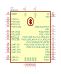
BTM222 | Description: Bluetooth SPP Module, UART, Class 1
Keys: Bluetooth BT SPP Module
Datasheet: https://www.tme.eu/de/Document/b90358c53cd65c9b10d2914f55812666/btm222_datasheet.pdf |
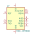
MOD-nRF8001 | Description: Bluetooth Low Energy module based on nRF8001 chipset
Keys: Bluetooth Low Energy nRF8001
Datasheet: https://www.olimex.com/Products/Modules/RF/MOD-nRF8001/ |
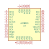
nRF8001 | Description: BLE LE Connectivity IC, QFN-32
Keys: BLE, bluetooth
Datasheet: https://www.nordicsemi.com/eng/nordic/content_download/2981/38488/file/nRF8001_PS_v1.3.pdf |
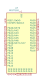
RFD77101 | Description: Simblee Bluetooth Smart Module with ARM Cortex-M0 and integrated antenna
Keys: Simblee ARM Cortex-M0 Bluetooth antenna
Datasheet: https://www.simblee.com/Simblee%20RFD77101%20Datasheet%20v1.0.pdf |
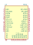
RN42 | Description: Class 2 Bluetooth Module with on-board antenna
Keys: Bluetooth Module
Datasheet: http://ww1.microchip.com/downloads/en/DeviceDoc/rn-42-ds-v2.32r.pdf |
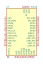
RN42N | Description: Class 2 Bluetooth Module without antenna
Keys: Bluetooth Module
Datasheet: http://ww1.microchip.com/downloads/en/DeviceDoc/rn-42-ds-v2.32r.pdf |
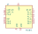
RN4871 | Description: Bluetooth Low Energy 4.2 Module
Keys: Bluetooth Low Energy 4.2 Module
Datasheet: http://ww1.microchip.com/downloads/en/DeviceDoc/50002489A.pdf |
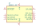
SPBTLE-RF | Description: Very Low Power network processor module for BLE v4.1, Hub capabilities
Keys: BLE bluetooth module low-power
Datasheet: http://www.st.com/resource/en/datasheet/spbtle-rf.pdf |
SPBTLE-RF0 | Description: Very Low Power network processor module for BLE v4.1
Keys: BLE bluetooth module low-power
Datasheet: http://www.st.com/resource/en/datasheet/spbtle-rf0.pdf |